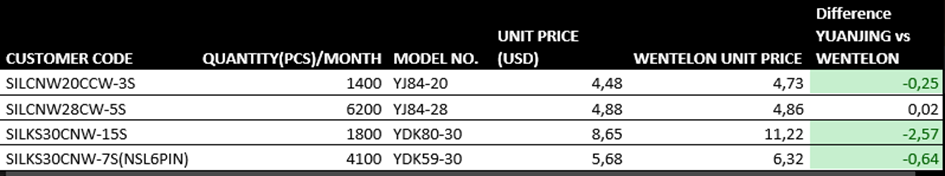
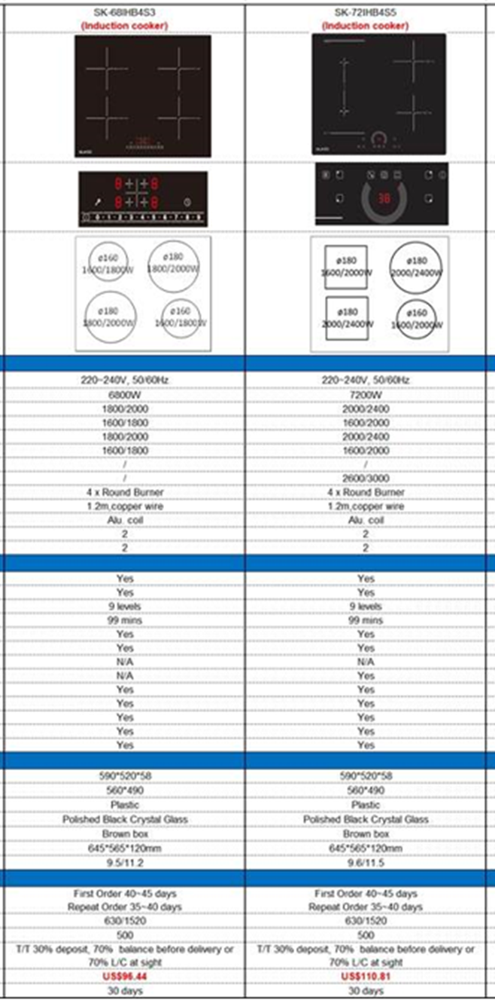
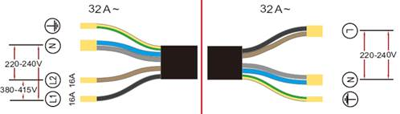
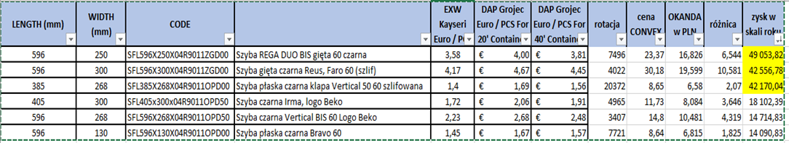

Co dzieje się w zakupach?
- Soft Touch 2.0 – próbki 19/12 przekazane do Działu Konstrukcyjnego.
- Lakierowanie przycisków: wybrano firmę I.S.T Sp z o.o.
Koszty przedstawiają się następująco:
Frezowanie płyty - 738zł brutto
Płyta PP - 782zł brutto
Koszty transportu - 36,90 zł brutto
RAZEM KOSZT: 1556,90zł brutto - złozono zamówienie.
Cena przycisku na ten moment: 0.45zł/szt. - W ramach obniżenia cen zmieniliśmy gramatury przekładek z gramatury 455 na 425. Łącznie z poprzednimi przekładkami, oszczędność w skali roku 6000pln
- Yuanjing Zhuoli Motor – sprawdzamy ceny u nowego potencjalnego dostawcy silników z Chin.Poniżej porównanie z Wentelonem.  Sprowadzamy próbki. Czas oczekiwania na próbki: 10 dni.
- Płyty indukcyjne - poprosiłam o próbki dwóch modeli płyt.

Płyty pakowane są w skrzynie po 64szt. Oferują roczną gwarancję, w trakcie której wysyłają na nasz koszt bezpłatnie komponenty. Potrzebuje oficjalne upowaznienie do posługiwania się naszym LOGO. Potrzebują tez projekt naszego LOGO. Jest mozliwość połączenia jak na rysunku ponizej:
 - Zarówki dla BEKO – próbki z firmy NY Lighting przekazane do dz. Konstrukcyjnego czekamy na decyzję. Dokumenty zostały sprawdzone przez p. Kamińskiego i spełniają oczekiwania. Mają też wytrzymywać siłę nacisku którą wymaga BEKO
- Rozważamy przeniesienie produkcji do TOT małego detalu - >ZESKOP-BI_ ZESKOP-CZ.
Oferta z TOT:
Cena ofertowa ogółem: 83,83zł + 71,42zł + 0,50zł = 155,75zł / 100kpl. Czyli mamy 1,56zł TOT vs 1,69zł PIMET. Około 1600zł netto taniej w TOT. Zmieniamy? - Odnotowaliśmy wzmożoną ilość reklamacji sterowań P20/P21. Odebraliśmy kilka sztuk po naprawach serwisowych i większość ma spalony rezystor R1. Badamy z dostawcą przyczynę.
-
Wyceniamy:
Silniki firma SISME, szyby OKANDAN i EUROP TEC, filtry PLASFORM;
Pasek LED TCI(zapytanie złozone przez formularz kontaktowy na stronie, brak odpowiedzi).
Oferta OKANDA (Turcja) -> wniosek -> opłaca się przenieść szyby gięte, ale słyszałam, ze będziemy wychodzi z tego typu szyb.
 - W środę o godz. 11:00 mamy telekonferencję z firmą SILK ROAD. Jest to firma, która przedstawiła najtańszą ofertę na wdrozenie ISO 1400. Dodam, iz mieliśmy ustandaryzowane wymagania dlatego kazda firma wyceniała to samo (szczegóły tutaj)
-
W celu zmniejszenia stanów minimalnych chcielibyśmy wyjść z ponizszej blachy
I zastąpić ją jedną z ponizszych.BLISZ0.5 Blacha nierdzewna szczotkowana 0.50mm 1250x2500 1.4016 fiber laser
Dział konstrukcyjny sprawdza mozliwość.BLISZ0.4 Blacha nierdzewna szczotkowana 0.40mm 1000x2000 1.4016 fiber laser BLISZ0.6 Blacha nierdzewna szczotkowana 0.60mm 1250x2500 1.4016 fiber laser - Odpad farb proszkowych - szukamy firmy, która odbierze odpad.
- Negocjuję cenę farby czarnej z JOTUN. Ostatnia oferta była 4.25 EUR, chcę cenę 4,12 EUR. Zaproponowali, iz obniza jeśli będziemy kupować jednocześnie farbę białą. Testowaliśmy białą - jest ok. Umówione spotkanie na jutro na godz. 13:30.
- Ostatnio obudowy do 6S nie przeszły testów na niepalność. Tymczasowo wdrazamy procedurę sprawdzania kazdej dostawy PIMETU.
- SLIDER - od początku roku będziemy otrzymywać dostawy po 500 szt. miesięcznie. Nowe okapy, które wdrozymy do produkcji od stycznia:
Indeks Nazwa OSAL60MGLW.G8.MC.KSB.NSM3_EO Salina 60 czarny + nakładka miedź OSAL90MGLW.G8.MC.KSB.NSM3_EO Salina 90 czarny + nakładka miedź OSAL60MGLW.G8.MC.KSB.NSZL3_EO Salina 60 czarny + nakładka złota OSAL90MGLW.G8.MC.KSB.NSZL3_EO Salina 90 czarny + nakładka złota OMEL60MFLW.G8.MC.KSB_EO Meloria Plus 60 czarny OMEL60JFLW.S3.MC.KSB_EO Meloria 60 czarny - Temat automatycznego przeliczania przez system stanów minimalnych jest już na bardzo zaawansowanym etapie. Trwa testowanie
Wysłane zostanie:
SILCNW20CCW-3S - model no. YJ84-20
SILCNW28CW-5S - model no. YJ84-28
Dodatkowo sprawdzamy czy posiadają silniki S8015 i S8020 (ostatnio przetestowaliśmy i są ok, lecz drogie).
Poniej ceny w/w silników w Wentelonie w porównaniu do aktualnie uzywanych:
| S8015 | 7,91 USD(z kondensatorem) 2,5uF/450V, S0: 0,31 USD (TL6828C-530 - 4,61 USD(silnik bez kondensatora) - 6S), YY5930D-50 - 6,08 USD + 0,25 USD kondensator - 7s) |
| S8020 | 9,11 USD(z kondensatorem) 2,5uF/450V, S0: 0,31 USD (TL6828C-530 - 4,61 USD(silnik bez kondensatora) - 6S), YY5930D-50 - 6,08 USD + 0,25 USD kondensator - 7s) |
Sprzedaż vs zakupy